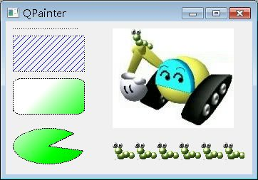
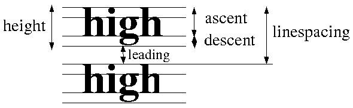
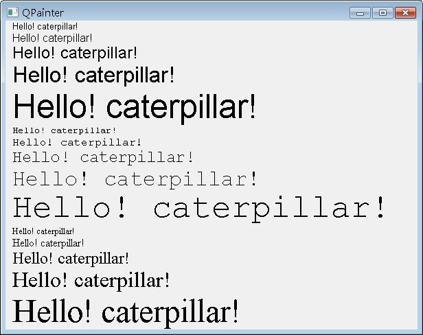

QPainter、QPaintEngine、QPaintDevice組成了Qt的 繪圖系統（The Paint System），QPainter 提供低階的繪圖API，在內部使用QPaintEngine作為介面，在QPaintDevice進行繪圖，只要是QPaintDevice的子類別，就 可以建立QPainter在其上進行圖形繪製，像是QWidget、QImage、QPicture、QPrinter等都是QPaintDevice的 子類別。
建立QPainter的方式如下，其中qPainterDevice是個指向QPaintDevice子類別的名稱：
QPainter painter(qPainterDevice);
若是圖形元件，通常會重新定義QWidget的paintEvent()，當繪圖裝置（Paint Device）需要重繪時，就會發出QPaintEvent並分派給這個方法來處理事件，例如元件出現、被覆蓋又重現時，您也可以呼叫repaint() 或update()，這也會執行paintEvent()。
QPainter提供各種繪製圖形的API，從基本的線繪製、方塊、矩形、圓形、漸層到複雜的圖片等，QPainter都有提供相對應的API，使用的方式，在 QPainter 的說明文件 中，基本上都有提供，在這邊基本上要先了解的是，QPainter的三個基本設定：筆觸（Pen）、筆刷（Brush）與字型（Font）。
筆觸在Qt中是以QPen作代表，用來於繪製線條或輪廓時決定樣式，像是顏色、筆寬、轉折、線條樣式（實線、曲線、點狀線之類的樣式）等。
筆刷在Qt中是以QBrush作代表，用來於繪製矩形、圓形、扇形等幾何圖形時決定樣式，像是顏色、填滿樣式、漸層等。
以下先看一個簡單的程式，了解一下QPainter的幾個API，以及QPen、QBrush的使用：
#include <QApplication>
#include <QWidget>
#include <QPainter>
class PainterWidget : public QWidget {
protected:
// 重新定義paintEvent()事件處理
void paintEvent(QPaintEvent*);
};
// 實作事件處理
void PainterWidget::paintEvent(QPaintEvent *event) {
// 建立QPainter
QPainter painter(this);
// 設定筆觸為點狀線
painter.setPen(Qt::DotLine);
// 指定x、y、width、height繪製線條
painter.drawLine(10, 10, 100, 10);
// 設定筆刷為藍色、對角斜線樣式
painter.setBrush(QBrush(Qt::blue, Qt::BDiagPattern));
// 指定x、y、width、height繪製矩形
painter.drawRect(10, 20, 100, 50);
// 設定線形漸層，x1,y1為起點，x2,y2為終點
QLinearGradient gradient(50, 100, 300, 350);
// 設定漸層顏色過渡
gradient.setColorAt(0.0, Qt::white);
gradient.setColorAt(0.2, Qt::green);
gradient.setColorAt(1.0, Qt::black);
// 以漸層物件建立筆刷
painter.setBrush(QBrush(gradient));
// 繪製圓角矩形
painter.drawRoundRect(10, 80, 100, 50);
// 繪製扇形，單位為 1/16 角度，下例為 45 度 到 300 度
painter.drawPie(10, 150, 100, 50, 45 * 16, 300 * 16);
// 繪製圖片
painter.drawPixmap(150, 10, QPixmap("caterpillar.jpg"));
// 繪製填滿圖形
painter.drawTiledPixmap(150, 170, 185, 25, QPixmap("caterpillar_smaill.gif"));
}
int main(int argc, char *argv[]) {
QApplication app(argc, argv);
PainterWidget pWidget;
pWidget.setWindowTitle("QPainter");
pWidget.resize(350, 200);
pWidget.show();
return app.exec();
}執行的結果如下所示：

QPainter 類別中的drawText()方法可以在繪圖裝置上繪製文字，也可以設定繪製時所用的字型，字型在Qt中是使用QFont代表，在設定好字型之後，可以用fontMetrics()方法 取得字型的幾何資訊，例如ascent（字元最高點至字元底線baseline距離）、descent（字元最低點到字元底線距離）、leading（兩 行之間的空間值）height（字體印字時的高度，相當於 ascent+descent +1，1pixel是字元底線的高度）與linespacing（height+leading）等。

下面這個程式是文字繪製的簡單示範，利用迴圈展示三種字型、五種大小不同組合下的文字繪製效果：
#include <QApplication>
#include <QWidget>
#include <QPainter>
class PainterWidget : public QWidget {
protected:
void paintEvent(QPaintEvent*);
};
void PainterWidget::paintEvent(QPaintEvent *event) {
QPainter painter(this);
static const char *fonts[] = {"Helvetica", "Courier", "Times", 0};
static int sizes[] = {10, 12, 18, 24, 36, 0};
int f = 0;
int y = 0;
while (fonts[f]) {
int s = 0;
while (sizes[s]) {
QFont font(fonts[f], sizes[s]);
painter.setFont(font);
QFontMetrics fm = painter.fontMetrics();
y += fm.ascent();
painter.drawText(10, y, "Hello! caterpillar!");
y += fm.descent();
s++;
}
f++;
}
}
int main(int argc, char *argv[]) {
QApplication app(argc, argv);
PainterWidget pWidget;
pWidget.setWindowTitle("QPainter");
pWidget.resize(600, 450);
pWidget.show();
return app.exec();
}下圖為執行時的結果畫面：
